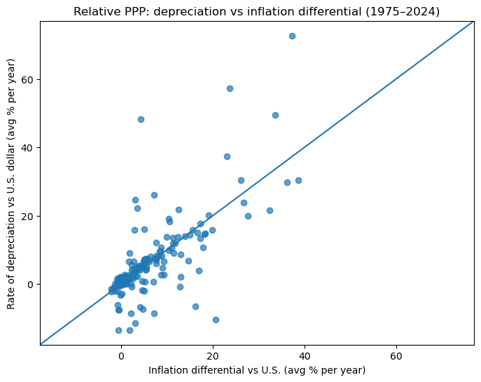
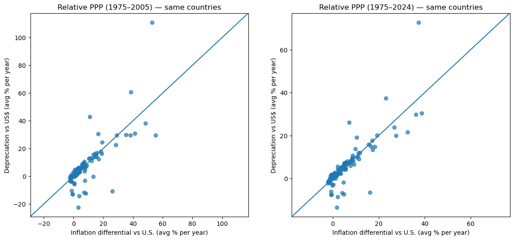

Ch 4. PPP Graph Analysis#
1. Uploading the Graph#

Source: Feenstra and Taylor (2017), Essential International Economics, 3rd ed., Figure 11-2.
Claude: Explanation#
This graph is a scatter plot that empirically tests the predictions of Purchasing Power Parity (PPP).
Axis Descriptions:
Horizontal axis: Difference between each country’s inflation rate and the U.S. inflation rate over 1975–2005 (annual %)
Vertical axis: Rate of depreciation of each country’s currency against the U.S. dollar over the same period (annual %)
Key Content:
The black diagonal line represents the theoretical relationship predicted by PPP: exchange rates should change by the same amount as the inflation differential. For example, if a country’s inflation is 10% higher than the U.S. per year, PPP predicts that its currency should depreciate by 10% per year.
Each point represents an individual country, and most points are distributed near this diagonal line. This shows that PPP holds reasonably well in the long run.
Interpretation:
Countries with low inflation (left side) experienced little currency depreciation
Countries with high inflation (right side, +30–40%) experienced large currency depreciation
While there are frequent short-run deviations from PPP, over a 30-year period a strong positive correlation emerges between inflation differentials and exchange rate changes
This is a classic graph frequently used in international economics textbooks to illustrate the long-run validity of PPP.
It should be “depreciation rate,” not “depreciation of value”!#
Claude’s Explanation#
Correct, I stand corrected. Translating “depreciation” here as currency depreciation rate is more appropriate.
The vertical axis represents the depreciation rate of each country’s currency against the U.S. dollar (annual %). In other words, the graph shows that countries with higher inflation than the U.S. experienced greater currency depreciation relative to the dollar.
The rest of the interpretation remains the same. It demonstrates that the PPP prediction — that exchange rates depreciate by the amount of the inflation differential in the long run — is well supported by the empirical data.
ChatGPT: Explanation#
This figure is a scatter plot showing how well the long-run predictions of Purchasing Power Parity (PPP) match actual data.
1. Meaning of the Axes#
Horizontal axis
Inflation differential over 1975–2005: \(\pi_{country} - \pi_{US}\) (how much higher the inflation rate was compared to the U.S., annual average %)
Vertical axis
Exchange rate depreciation over the same period (how much the country’s currency weakened against the dollar, annual average %)
In other words:
Horizontal axis: Price differential
Vertical axis: Exchange rate change
2. The Relationship Predicted by PPP#
The basic equation of PPP is:
where:
\(\Delta s\): Rate of exchange rate change (domestic currency depreciation rate)
\(\pi\): Inflation rate
The meaning is as follows:
If domestic prices rise faster than in the U.S. → the domestic currency depreciates by that amount.
The diagonal (45-degree) line in the graph represents exactly the relationship predicted by PPP.
3. Meaning of the Data Points#
Each point represents one country.
Observed characteristics:
Most points cluster around the diagonal line
Larger inflation differentials correspond to greater currency depreciation
In other words, PPP holds reasonably well in the long run.
Example:
If inflation is +10%p higher than the U.S.
→ the currency tends to depreciate by about +10%
4. Economic Interpretation#
The key message of this figure is:
In the long run, exchange rates reflect price differentials.
Specifically:
High-inflation countries → currency weakness
Low-inflation countries → currency strength or stability
This is a critically important long-run relationship in international economics.
5. Important Additional Interpretation (Empirical Perspective)#
In the short run, PPP does not hold well (exchange rate volatility is high)
However, over long-run averages like 30 years, a strong linear relationship emerges
Reasons for imperfect alignment:
Capital movements
Productivity differences (Balassa–Samuelson effect)
Policy, crises, financial market factors
Summary#
In the long run:
This graph shows that Purchasing Power Parity is quite well supported by the data.
2. Updating the Graph Period#
ChatGPT: Analysis#
Below is a precise summary of the data sources and variable definitions used to create the updated PPP scatter plot. The key idea is to use the World Bank’s long-run country-level panel data to compute:
1. Data Source#
World Bank: World Development Indicators (WDI)#
Provider: World Bank
Database: World Development Indicators
API usage:
https://api.worldbank.org/v2/country/all/indicator/{indicator}
Features:
Covers nearly all countries
Annual time series (1960–present)
The most standard publicly available data for international comparative research
2. Variables Used#
(1) Inflation#
Indicator code
FP.CPI.TOTL.ZG
Name Inflation, consumer prices (annual %)
Definition \( \pi_{i,t} = \frac{CPI_{i,t} - CPI_{i,t-1}}{CPI_{i,t-1}} \times 100 \)
Meaning:
Annual inflation rate (%) based on the Consumer Price Index (CPI) for country \(i\)
An approximation of relative price changes used in PPP theory
(2) Exchange Rate#
Indicator code
PA.NUS.FCRF
Name Official exchange rate (LCU per US$, period average)
Definition
Exchange rate: \( e_{i,t} = \text{local currency units per US dollar} \)
Examples:
South Korea: KRW/USD
Japan: JPY/USD
Interpretation:
\(e\) rises → domestic currency depreciates
\(e\) falls → domestic currency appreciates
3. Derived Variables for PPP Analysis#
(1) Inflation Differential (relative to the U.S.)#
Annual: \( d_{i,t} = \pi_{i,t} - \pi_{US,t} \)
Period average: \( \overline{d_i} = \frac{1}{T} \sum_t d_{i,t} \)
Plotted on the horizontal axis
(2) Average Exchange Rate Depreciation#
Using log changes: \( \Delta s_{i,t} = \ln(e_{i,t}) - \ln(e_{i,t-1}) \)
Period average: \( \overline{\Delta s}_i = \frac{1}{T} \left[\ln(e_{i,T}) - \ln(e_{i,0})\right] \)
Expressed in percent: \( 100 \times \overline{\Delta s}_i \)
Plotted on the vertical axis
4. Connection to PPP Theory#
Relative PPP: \( \Delta s_i \approx \pi_i - \pi_{US} \)
Therefore, in the scatter plot:
x-axis: Average inflation differential
y-axis: Average exchange rate depreciation
Reference line: \( y = x \)
5. Why This Variable Combination Is Used (Empirical Rationale)#
CPI inflation → Standard measure of cross-country price level changes
LCU/USD exchange rate → Depreciation direction aligns with the PPP equation
Log changes → Can be interpreted as long-run growth rates (annualized)
Period averages → Eliminate short-run exchange rate noise to reveal the long-run PPP relationship
6. Interpretation Example#
For a given country:
Average inflation differential: +8%
Average depreciation rate: +9%
→ PPP holds well in the long run
7. Notes (Differences from the Original Figure)#
Original figure:
Period: 1975–2005
Partial country sample
Updated version:

Period: 1975–present (e.g., 2024)
All World Bank countries
Same concept, more recent data
If desired, the following additional analyses can be performed:
Whether PPP fit has strengthened or weakened after 2005
Linear regression estimation: \( \bar{\Delta s}_i = \alpha + \beta \bar{d}_i \) (PPP implies \(\beta \approx 1\))
Advanced vs. emerging economies comparison
This analysis yields quite significant results in international finance empirics.
3. Comparing Two Periods#
Explain the following results
Number of common countries: 120
Period |
N |
corr(x,y) |
OLS a |
OLS b |
R² |
RMSE (y-x) |
MAE (y-x) |
|---|---|---|---|---|---|---|---|
1975–2005 (common) |
120 |
0.784 |
-0.689 |
1.029 |
0.614 |
9.240 |
4.309 |
1975–2024 (common) |
120 |
0.835 |
-0.225 |
1.024 |
0.697 |
5.532 |
2.660 |
ChatGPT: Analysis#
Using the same World Bank WDI API approach as before, the analysis computes each of the two periods (1975–2005, 1975–2024) separately, then:
Retains only the “same set of countries” with sufficient observations in both periods, and
Compares the scatter plots, regression coefficients, and error metrics side by side.

The results compare how well the relative PPP relationship \( y = \Delta s \approx x = (\pi_i - \pi_{US}) \) holds for the same 120 countries across the two periods. Below is an interpretation focused on economic meaning.
1. Overall Summary#
Key changes:
Correlation: 0.784 → 0.835 (improved)
PPP baseline errors:
RMSE: 9.24 → 5.53 (substantially reduced)
MAE: 4.31 → 2.66 (substantially reduced)
Slope: 1.03 → 1.02 (still close to 1)
In other words:
Including post-2005 data improves the long-run PPP fit.
2. Correlation (corr)#
Period |
corr |
|---|---|
1975–2005 |
0.784 |
1975–2024 |
0.835 |
Meaning:
The relationship that countries with larger inflation differentials experience greater currency depreciation has strengthened
In the long run, exchange rates more faithfully reflect price differentials
Economic interpretation:
→ The price–exchange rate linkage has strengthened in the more recent period
Possible reasons:
Decline of fixed exchange rate regimes
Expansion of capital mobility
Inflation stabilization
3. Slope (OLS b)#
Period |
b |
|---|---|
1975–2005 |
1.029 |
1975–2024 |
1.024 |
PPP theory: \( \Delta s = 1 \times (\pi_i - \pi_{US}) \)
Results:
Both periods yield slopes nearly perfectly equal to 1
In the long run, PPP is quantitatively very accurate
That is, “if prices are 5% higher than the U.S., the currency depreciates by about 5%.”
4. Intercept (OLS a)#
Period |
a |
|---|---|
1975–2005 |
-0.69 |
1975–2024 |
-0.22 |
Meaning:
Overall, there was a slight dollar strength bias
In the more recent period, this bias has diminished
5. PPP Baseline Errors (Most Important)#
RMSE#
Period |
RMSE |
|---|---|
1975–2005 |
9.24 |
1975–2024 |
5.53 |
→ The average deviation from PPP predictions decreased by about 40%
MAE#
Period |
MAE |
|---|---|
1975–2005 |
4.31 |
1975–2024 |
2.66 |
→ Typical errors also decreased substantially
Economic meaning:
In the more recent period, exchange rates moved much more closely in line with price differentials
6. Explanatory Power (R²)#
Period |
R² |
|---|---|
1975–2005 |
0.614 |
1975–2024 |
0.697 |
→ Price differentials alone explain approximately 70% of exchange rate variation
This is a very high level of explanatory power in international finance empirics.
7. Comprehensive Interpretation#
Conclusions:
Long-run PPP holds strongly in both periods
Including post-2005 data shows:
Increased correlation
Reduced errors
Increased explanatory power
That is,
In the recent global economy, exchange rates have moved closer to price differentials.
8. Why These Results Emerge (Structural Reasons)#
1975–2005:
Many high-inflation countries (Latin America, Turkey, etc.)
Fixed and managed exchange rate regimes still present
Incomplete financial market integration
Post-2005:
Global inflation stabilization
Widespread adoption of inflation targeting
Floating exchange rate regimes become the norm
Increased capital mobility
→ PPP convergence mechanisms strengthened
9. Key Takeaway#
When including the post-2005 period, relative PPP — that exchange rates ≈ inflation differentials in the long run — becomes more accurate.
If desired, the analysis can go one step further to examine:
Advanced vs. emerging economies comparison
Which countries deviate most from PPP
Countries where the PPP relationship improved most after 2005
This analysis yields quite interesting results in international finance empirics.
💻 Python Code#
# Update graph period
import requests
import pandas as pd
import numpy as np
import matplotlib.pyplot as plt
INF = "FP.CPI.TOTL.ZG" # Inflation, consumer prices (annual %)
EXR = "PA.NUS.FCRF" # Official exchange rate (LCU per US$, period average)
def wb_indicator_all_countries(indicator: str, start: int, end: int) -> pd.DataFrame:
# World Bank API: all countries, JSON
url = f"https://api.worldbank.org/v2/country/all/indicator/{indicator}"
params = {
"format": "json",
"per_page": 20000,
"date": f"{start}:{end}",
}
r = requests.get(url, params=params, timeout=60)
r.raise_for_status()
data = r.json()
if not isinstance(data, list) or len(data) < 2:
raise RuntimeError("Unexpected World Bank API response")
rows = []
for obs in data[1]:
if obs.get("value") is None:
continue
rows.append({
"country_code": obs["country"]["id"],
"country": obs["country"]["value"],
"year": int(obs["date"]),
"value": float(obs["value"]),
})
return pd.DataFrame(rows)
def build_ppp_scatter(start=1975, end=2024, min_years=20, drop_extreme_inflation=200.0):
# 1) Load data
inf = wb_indicator_all_countries(INF, start, end).rename(columns={"value": "infl"})
exr = wb_indicator_all_countries(EXR, start, end).rename(columns={"value": "exr"})
# 2) U.S. inflation time series (by year)
us_inf = (inf[inf["country_code"] == "US"][["year", "infl"]]
.rename(columns={"infl": "infl_us"}))
# 3) Inflation differential: (country - U.S.), merge by year then average
inf2 = inf.merge(us_inf, on="year", how="inner")
inf2["infl_diff"] = inf2["infl"] - inf2["infl_us"]
# Remove extreme hyperinflation observations (optional)
inf2 = inf2[inf2["infl"].abs() <= drop_extreme_inflation]
infl_summary = (inf2.groupby(["country_code", "country"])
.agg(infl_diff_mean=("infl_diff", "mean"),
n_years_infl=("infl_diff", "count"))
.reset_index())
# 4) Exchange rate depreciation: log change of LCU/USD (annualized)
# Rising e (LCU/USD) means domestic currency depreciates
exr = exr.sort_values(["country_code", "year"])
exr["ln_exr"] = np.log(exr["exr"])
exr_summary = (exr.groupby(["country_code", "country"])
.agg(year_min=("year", "min"),
year_max=("year", "max"),
ln_exr_min=("ln_exr", "first"),
ln_exr_max=("ln_exr", "last"),
n_years_exr=("ln_exr", "count"))
.reset_index())
# Data may not span the full start-end range; filter by minimum observation years
exr_summary["T"] = exr_summary["year_max"] - exr_summary["year_min"]
exr_summary = exr_summary[exr_summary["T"] >= 1]
# Annualized depreciation rate (%) = 100 * (ln e_end - ln e_start) / T
exr_summary["dep_rate"] = 100.0 * (exr_summary["ln_exr_max"] - exr_summary["ln_exr_min"]) / exr_summary["T"]
# 5) Merge + filter (require sufficiently long series for both inflation and exchange rate)
df = infl_summary.merge(exr_summary, on=["country_code", "country"], how="inner")
df = df[(df["n_years_infl"] >= min_years) & (df["n_years_exr"] >= min_years)]
return df
def plot_ppp_scatter(df: pd.DataFrame, title: str):
x = df["infl_diff_mean"].to_numpy()
y = df["dep_rate"].to_numpy()
# Set axis range with a small margin based on data
lo = np.nanmin([x.min(), y.min()])
hi = np.nanmax([x.max(), y.max()])
pad = 0.05 * (hi - lo) if hi > lo else 1.0
lo2, hi2 = lo - pad, hi + pad
plt.figure(figsize=(8, 6))
plt.scatter(x, y, alpha=0.7)
plt.plot([lo2, hi2], [lo2, hi2]) # PPP prediction line: y = x
plt.xlim(lo2, hi2)
plt.ylim(lo2, hi2)
plt.xlabel("Inflation differential vs U.S. (avg % per year)")
plt.ylabel("Rate of depreciation vs U.S. dollar (avg % per year)")
plt.title(title)
plt.show()
# Run: update to 1975–latest available (e.g., 2024)
df = build_ppp_scatter(start=1975, end=2024, min_years=20, drop_extreme_inflation=200.0)
plot_ppp_scatter(df, "Relative PPP: depreciation vs inflation differential (1975\u20132024)")
df

| country_code | country | infl_diff_mean | n_years_infl | year_min | year_max | ln_exr_min | ln_exr_max | n_years_exr | T | dep_rate | |
|---|---|---|---|---|---|---|---|---|---|---|---|
| 1 | AF | Afghanistan | 2.669859 | 20 | 1975 | 2020 | 3.553335 | 4.341381 | 46 | 45 | 1.751212 |
| 2 | AG | Antigua and Barbuda | -0.284433 | 26 | 1975 | 2024 | 0.774633 | 0.993252 | 50 | 49 | 0.446161 |
| 3 | AL | Albania | 5.189904 | 32 | 1992 | 2024 | 4.317921 | 4.533925 | 33 | 32 | 0.675011 |
| 4 | AM | Armenia | 7.692888 | 30 | 1993 | 2024 | 2.208824 | 5.973121 | 32 | 31 | 12.142895 |
| 5 | AO | Angola | 33.628776 | 26 | 1975 | 2024 | -17.482543 | 6.768316 | 50 | 49 | 49.491550 |
| ... | ... | ... | ... | ... | ... | ... | ... | ... | ... | ... | ... |
| 186 | XC | Euro area | 0.385607 | 50 | 1999 | 2024 | -0.063704 | -0.079163 | 26 | 25 | -0.061837 |
| 187 | XK | Kosovo | -0.277035 | 22 | 2002 | 2024 | 0.055963 | -0.078646 | 23 | 22 | -0.611859 |
| 188 | YE | Yemen, Rep. | 14.983923 | 24 | 1990 | 2023 | 2.485745 | 7.211643 | 34 | 33 | 14.320903 |
| 189 | ZA | South Africa | 4.915459 | 50 | 1975 | 2024 | -0.301771 | 2.908466 | 50 | 49 | 6.551503 |
| 190 | ZM | Zambia | 32.443721 | 39 | 1975 | 2024 | -7.349008 | 3.264477 | 50 | 49 | 21.660174 |
175 rows × 11 columns
# PPP theory: two-period comparison
import requests
import pandas as pd
import numpy as np
import matplotlib.pyplot as plt
INF = "FP.CPI.TOTL.ZG" # Inflation, consumer prices (annual %)
EXR = "PA.NUS.FCRF" # Official exchange rate (LCU per US$, period average)
def wb_indicator_all_countries(indicator: str, start: int, end: int) -> pd.DataFrame:
url = f"https://api.worldbank.org/v2/country/all/indicator/{indicator}"
params = {"format": "json", "per_page": 20000, "date": f"{start}:{end}"}
r = requests.get(url, params=params, timeout=60)
r.raise_for_status()
data = r.json()
if not isinstance(data, list) or len(data) < 2:
raise RuntimeError("Unexpected World Bank API response")
rows = []
for obs in data[1]:
if obs.get("value") is None:
continue
rows.append({
"country_code": obs["country"]["id"],
"country": obs["country"]["value"],
"year": int(obs["date"]),
"value": float(obs["value"]),
})
return pd.DataFrame(rows)
def build_ppp_period(start: int, end: int, min_years: int = 20, drop_extreme_inflation: float = 200.0) -> pd.DataFrame:
# 1) Load data
inf = wb_indicator_all_countries(INF, start, end).rename(columns={"value": "infl"})
exr = wb_indicator_all_countries(EXR, start, end).rename(columns={"value": "exr"})
# 2) U.S. inflation (by year)
us_inf = (inf[inf["country_code"] == "US"][["year", "infl"]]
.rename(columns={"infl": "infl_us"}))
# 3) Inflation differential (country - U.S.), merge by year then average
inf2 = inf.merge(us_inf, on="year", how="inner")
inf2 = inf2[inf2["infl"].abs() <= drop_extreme_inflation] # Hyperinflation mitigation (optional)
inf2["infl_diff"] = inf2["infl"] - inf2["infl_us"]
infl_summary = (inf2.groupby(["country_code", "country"])
.agg(infl_diff_mean=("infl_diff", "mean"),
n_years_infl=("infl_diff", "count"))
.reset_index())
# 4) Exchange rate depreciation: annualized average growth rate of ln(e) (%)
exr = exr.sort_values(["country_code", "year"])
exr["ln_exr"] = np.log(exr["exr"])
# Compute first/last within the available range for each country, then annualized change rate
exr_summary = (exr.groupby(["country_code", "country"])
.agg(year_min=("year", "min"),
year_max=("year", "max"),
ln_exr_min=("ln_exr", "first"),
ln_exr_max=("ln_exr", "last"),
n_years_exr=("ln_exr", "count"))
.reset_index())
exr_summary["T"] = exr_summary["year_max"] - exr_summary["year_min"]
exr_summary = exr_summary[exr_summary["T"] >= 1]
exr_summary["dep_rate"] = 100.0 * (exr_summary["ln_exr_max"] - exr_summary["ln_exr_min"]) / exr_summary["T"]
# 5) Merge + minimum observation filter
df = infl_summary.merge(exr_summary, on=["country_code", "country"], how="inner")
df = df[(df["n_years_infl"] >= min_years) & (df["n_years_exr"] >= min_years)].copy()
df["period"] = f"{start}-{end}"
return df[["country_code","country","period","infl_diff_mean","dep_rate","n_years_infl","n_years_exr","year_min","year_max"]]
def ols_beta(x, y):
# y = a + b * x
X = np.column_stack([np.ones_like(x), x])
beta = np.linalg.lstsq(X, y, rcond=None)[0]
a, b = beta[0], beta[1]
yhat = a + b*x
resid = y - yhat
return a, b, yhat, resid
def period_metrics(df: pd.DataFrame):
x = df["infl_diff_mean"].to_numpy()
y = df["dep_rate"].to_numpy()
a, b, yhat, resid = ols_beta(x, y)
corr = np.corrcoef(x, y)[0,1]
# Error relative to PPP baseline y = x
ppp_err = y - x
rmse_ppp = np.sqrt(np.mean(ppp_err**2))
mae_ppp = np.mean(np.abs(ppp_err))
# Regression goodness of fit (R²)
ss_res = np.sum(resid**2)
ss_tot = np.sum((y - y.mean())**2)
r2 = 1 - ss_res/ss_tot if ss_tot > 0 else np.nan
return {
"N": len(df),
"corr(x,y)": corr,
"OLS a": a,
"OLS b": b,
"R2": r2,
"RMSE(y-x)": rmse_ppp,
"MAE(y-x)": mae_ppp,
}
def plot_two_periods(df1: pd.DataFrame, df2: pd.DataFrame, title1: str, title2: str):
def _plot(ax, df, title):
x = df["infl_diff_mean"].to_numpy()
y = df["dep_rate"].to_numpy()
lo = np.nanmin([x.min(), y.min()])
hi = np.nanmax([x.max(), y.max()])
pad = 0.05*(hi-lo) if hi > lo else 1.0
lo2, hi2 = lo - pad, hi + pad
ax.scatter(x, y, alpha=0.7)
ax.plot([lo2, hi2], [lo2, hi2]) # PPP: y = x
ax.set_xlim(lo2, hi2)
ax.set_ylim(lo2, hi2)
ax.set_xlabel("Inflation differential vs U.S. (avg % per year)")
ax.set_ylabel("Depreciation vs US$ (avg % per year)")
ax.set_title(title)
fig, axes = plt.subplots(1, 2, figsize=(14, 6))
_plot(axes[0], df1, title1)
_plot(axes[1], df2, title2)
plt.show()
# =========================
# Run: compute both periods
# =========================
min_years = 20
df_7505 = build_ppp_period(1975, 2005, min_years=min_years)
df_7524 = build_ppp_period(1975, 2024, min_years=min_years)
# =========================
# Keep only common countries (intersection)
# =========================
common = sorted(set(df_7505["country_code"]).intersection(set(df_7524["country_code"])))
df_7505_c = df_7505[df_7505["country_code"].isin(common)].copy()
df_7524_c = df_7524[df_7524["country_code"].isin(common)].copy()
print("Number of common countries:", len(common))
# =========================
# Summary metrics for comparison
# =========================
m1 = period_metrics(df_7505_c)
m2 = period_metrics(df_7524_c)
summary = pd.DataFrame([m1, m2], index=["1975-2005 (common)", "1975-2024 (common)"])
display(summary)
# =========================
# Scatter plot comparison (same countries)
# =========================
plot_two_periods(
df_7505_c, df_7524_c,
title1="Relative PPP (1975\u20132005) \u2014 same countries",
title2="Relative PPP (1975\u20132024) \u2014 same countries"
)
Number of common countries: 120
| N | corr(x,y) | OLS a | OLS b | R2 | RMSE(y-x) | MAE(y-x) | |
|---|---|---|---|---|---|---|---|
| 1975-2005 (common) | 120 | 0.783525 | -0.689067 | 1.029313 | 0.613912 | 9.240113 | 4.308870 |
| 1975-2024 (common) | 120 | 0.834884 | -0.224975 | 1.024266 | 0.697032 | 5.532394 | 2.660401 |
